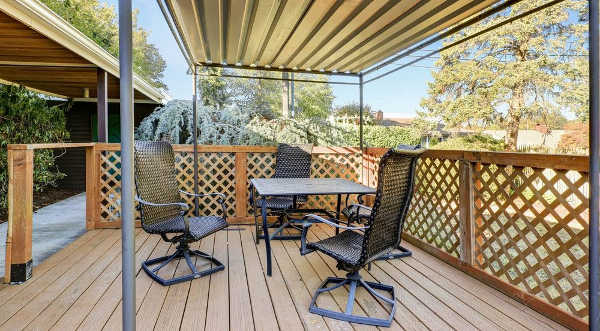
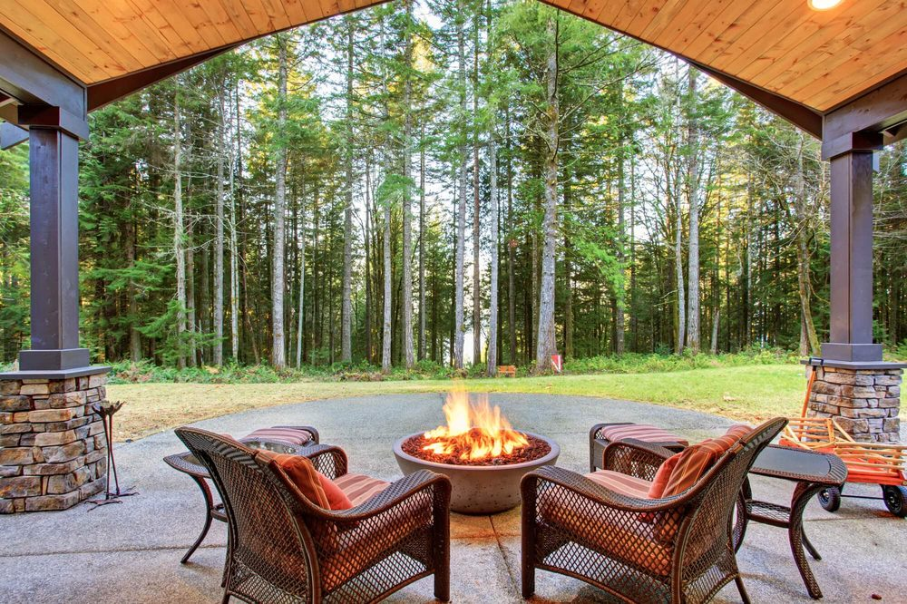

In This Guide
- Patio cover height depends on headroom, the size of the space, your furniture, and how you plan to use the area.
- Many covers fall somewhere between eight and twelve feet, as a rough starting point and not a rule.
- A lower cover feels cozy and shelters more from slanting rain, while a taller one feels open and suits lights or fans.
- Placement, attached or freestanding design, and any homeowners association or local requirements all affect the final height.
A patio is a good start for an outdoor space, and a cover turns it into a room you can use in the heat and the rain. Once you decide to add one, the questions come fast. How tall should it be? How big? Should it attach to the house or stand on its own?
Height is one of the first choices, and it shapes how the space feels and how well it shelters you. This guide from Big Easy Fence covers what to weigh, from placement to furniture, so you walk into a conversation about a patio cover with a clear idea of what you want.
Attached or Freestanding
The basic design affects height, so it makes sense to decide this first.
An attached cover ties into the house on one side and is held up by posts on the open side. That is the most common setup, since most patios sit at the back of the house. A freestanding cover has posts at all four corners and stands on its own, much like a pergola. It gives you more freedom in where you put it, and it needs a full set of supports.

Where to Place Your Patio Cover
The obvious spot is over the patio. Covers also work over outdoor kitchens, lounge areas, and dining spaces, and they can shade part of the house too. If a room in your home takes direct sun through the afternoon, a cover in the right place can act as a shield.
Think about where the sun sits at different times of day. The angle of the light decides how much shade a cover throws, and a small change in position can matter a lot. Rules matter too. Cities and neighborhoods often have guidelines about where an outdoor structure can go, and homeowners associations may add their own limits on design, materials, and height.
How Tall Should a Patio Cover Be?
There is no single right number. The answer comes from your house, your space, and how you want to use it. Many covers land somewhere between eight and twelve feet, and that range is a rough starting point for planning, not a standard to follow.
Headroom
People need to walk under the cover comfortably, including tall guests and anyone carrying a tray. A cover that is too low feels closed in and makes the space cramped.
Size of the Space
Height and footprint work together. A small square cover can fit a table and a couple of chairs, but not an outdoor kitchen setup. If you plan a dining area, a lounge, or a grill station, make sure the posts sit wide enough to leave room to move.
Lights and Fans
If you want ceiling fans or lighting, a taller cover gives them room to work and keeps them out of the way. A lower ceiling suits small, intimate gatherings, while a higher one feels open and airy.
Sun and Rain
A cover that sits too high lets slanting rain and low sun reach the patio, so you get less protection. Going lower shelters more of the space from weather. In a region with heavy summer rain and strong sun, that trade-off deserves real thought.
Nearby Structures
A cover has to fit the house it belongs to. It should attach below the roofline, clear windows and doors, and look in proportion with the walls around it. Going too big or too high next to existing structures throws off the look.
| Height Range | How It Feels | Good For |
|---|---|---|
| Lower (Around Eight Feet) | Cozy and sheltered | Small dining areas and quiet seating |
| Middle (Nine to Ten Feet) | Balanced and roomy | Most patios with furniture and a fan |
| Taller (Ten to Twelve Feet) | Open and airy | Large spaces, lighting, and outdoor kitchens |
Treat the table as a general guide only. Your actual height should come from a look at your home and your plans.
Is a Covered Patio Worth It?
Not every home improvement pays off, and it is fair to ask. A patio cover tends to earn its place in a few clear ways.
Shade and Weather Relief
Louisiana summers are hot and wet. A cover gives you shade in the afternoon and a dry place to sit when a shower rolls through, so the patio gets used more often across the year.
Protection for Furniture and the Patio
Outdoor furniture is built for the outdoors, yet constant sun and rain still wear it out. A cover shields both the furniture and the patio surface from direct exposure, which helps them last longer. It does not prevent all damage, and it does reduce the wear.
A Better-Looking Yard
A covered patio becomes a focal point for the outdoor area and adds a finished, inviting look. A well-designed cover that suits the house also makes the property more appealing to future buyers.

Check Local Rules Before You Build
Height, size, and placement can all be affected by local requirements and by homeowners association guidelines. These vary from one place to the next, so this article does not try to list them. Before you settle on a design, check with your local permitting office and your association if you have one, and ask your installer what applies to your property.
Getting that answer early keeps the design realistic and avoids changes after work has started. If you want the space to work with an outdoor kitchen or a pergola alongside the cover, plan those pieces together so the heights line up.
Getting the Height Right
The best patio cover height gives you comfortable headroom, protects the space from sun and rain, and looks in proportion with your house. Start with how you plan to use the area, decide between an attached and a freestanding design, and confirm the local rules. If you are ready to plan yours, get in touch with Big Easy Fence for a free estimate.
Planning a Patio Cover?
Tell us how you use your outdoor space and what you want to put under the cover. We will help you think through size, height, and design.